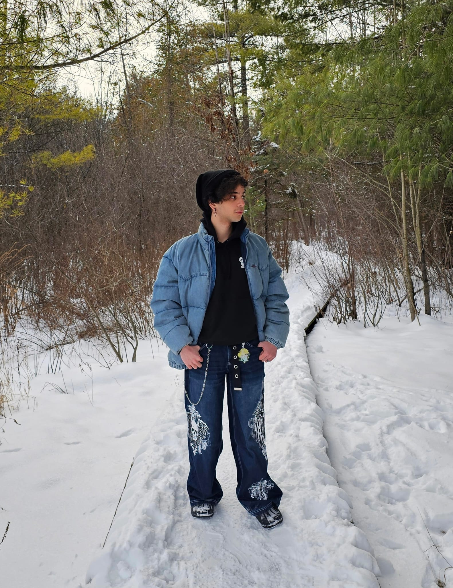

About Me
I'm Reda, a graphic design student who loves drawing and creating. I'm really into fashion, trying new things, and going out whenever I get the chance. I'm very obsessed with matcha and niche franchises for some reason, and I really hate clowns… which feels important to mention.
I never actually planned on going into graphic design. I was originally interested in animation, so I took a preliminary program, drawing foundations, with that goal in mind. Though one thing led to another, and I ended up in this program instead. Surprisingly, I'm really loving it so far, even more than I think I would have loved animation.
"They can take your power, but they can never take your knowledge."
- Agatha Harkness
My Skills
- Drawing and digital art
- Character design
- Adobe software proficiency
- Video editing
- HTML (hopefully by the end of the term)
- Photography
- Winning at UNO
Graphic Design Courses
- Typography
- Computer Graphics
- Web Design
- Graphic Design
- Communications for Graphic Design